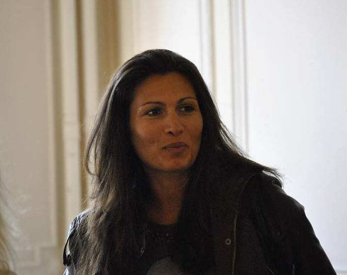

Research
My doctoral research combines body illusions, cardiac interoception, and virtual reality to probe how the self is modelled and monitored. Earlier pre-doctoral work explored collective decision-making and affective perception.

known as Mina
PhD Candidate in Cognitive Neuroscience
Université Libre de Bruxelles · Center for Research in Cognition and Neuroscience (CRCN)
We don't perceive reality as it is, but as we predict it to be.
My research sits at the intersection of consciousness science, interoception, and metacognition. I study how the brain predicts and monitors the self, especially in states where self-awareness is reorganised, as in lucid dreaming.
A core finding is that frequent lucid dreamers do not show superior raw interoceptive perception. They do show enhanced metacognitive sensitivity (M-ratio advantage: p = .033, d = 0.77) and greater resistance to multisensory body illusions at high interoceptive accuracy. This suggests that lucid dreaming reflects enhanced second-order monitoring of self-states rather than first-order perceptual precision.
My methods combine predictive processing and hierarchical Bayesian metacognition (HMeta-d), with signal detection theory, psychophysics, VR, and a forthcoming EEG project on heartbeat-evoked potentials.
My doctoral research combines body illusions, cardiac interoception, and virtual reality to probe how the self is modelled and monitored. Earlier pre-doctoral work explored collective decision-making and affective perception.
Enfacement and rubber hand paradigms test whether lucid dreamers resist multisensory conflicts that normally blur self-other or body-world boundaries. This resistance is predicted by a more precise self-model under predictive processing.
Using the Heart Rate Discrimination task (HRD) and cardio-visual paradigms, combined with hierarchical Bayesian meta-d' (HMeta-d), I probe how the precision of the body-model shapes conscious self-representation.
Custom Unity VR environment (HTC Vive Focus Vision) for the Rod-and-Frame illusion, with the adaptive Psi marginal method implemented from scratch in C# and validated against a Python reference. Modelled within the Alberts et al. (2016) Bayesian visuo-vestibular integration framework (6 to 7 free parameters).
Pre-PhD essays. Each linked PDF contains the English translation first, followed by the French original.
Heart Rate Discrimination task (HRD) via the cardioception Python framework. Hierarchical Bayesian meta-d' (HMeta-d). Adaptive Psi marginal method (Prins 2013 / Legrand 2022) for psychophysical threshold estimation. Polar and BioSemi ECG acquisition.
Full Unity VR development on HTC Vive Focus Vision (OpenXR). Built a Rod-and-Frame environment with the adaptive Psi marginal method implemented from scratch in C# and validated against a Python reference (Alberts et al. 2016 visuo-vestibular integration framework).
BioSemi ActiveTwo setup for an upcoming project on heartbeat-evoked potentials: the ERP time-locked to the R-peak, a classic marker of interoceptive processing (Schandry; Pollatos; Park & Tallon-Baudry). CuttingEEG 2025 training in MNE-Python and source analysis.
R (tidyverse, lme4, BayesFactor, metaSDT, HMeta-d). Python (scipy, cardioception, PsychoPy, Bayesian fitting pipelines). C# (Unity VR, adaptive psychophysics). Bayesian computational modelling (e.g. Alberts 2016 model, 6 to 7 free parameters, SSE + MLE fitting, validated across Python and C#).
I built an interactive demo so you can understand what metacognition is, what it tells you about yourself, and how to train it.
The tool is actively evolving. I’m currently working on richer feedback, additional questionnaires, and multi-session tracking. Feedback welcome.
A short selection of thinkers and voices I return to. Each one shaped a part of how I read the mind.
Open to collaborations, postdoc opportunities, and discussions around lucid dreaming, metacognition, interoception, and predictive processing.